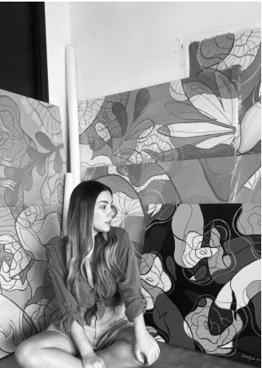

Carolina Jaen Merendino

Statement
My research is based on the obser- vation of the refractions of light, in particularly those on the surface of the water, the
change of direction and the waves that create and generate a hypnotic effect.
I am interested in exploring layers, their
distortions and contrasts, that continuous transformation of forms that become a metaphor for the constant changes that we
live by growing, evolving and therefore redefining ourselves.